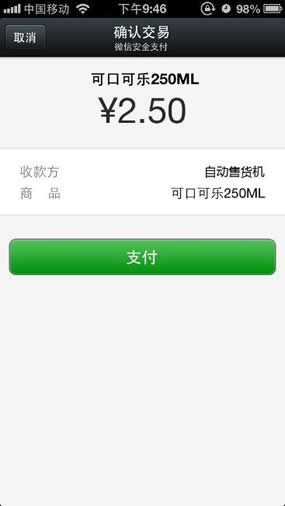
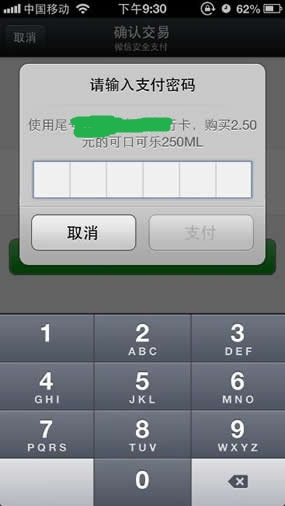
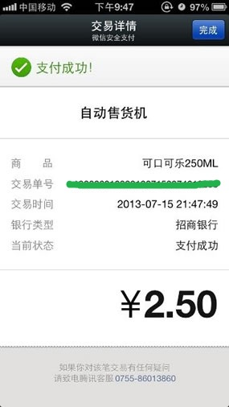
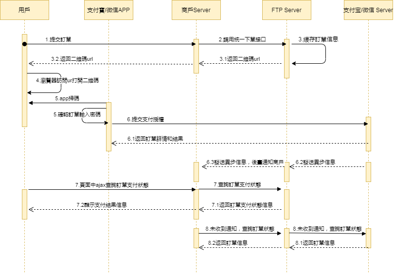

Dynamic QR Code Payment QR Pay（Online）
Online Payment
Scan Code Payment API Document
| Date | Version | Changes |
|---|---|---|
| 2025-12-19 | 1.0 | Initial draft |
1 Introduction
1.1 Document Overview
Scan code payment refers to a payment method where the merchant interfaces with a third party and generates a payment QR code for each transaction according to the WeChat Pay protocol, and through a carrier
(PC/POS/receipt/pad, etc.) displays the generated QR code to the consumer. The consumer then uses the WeChat or Alipay scan function to scan the code for payment.
This API can be applied to multiple online and offline payment scenarios, such as: offline vending machines with screens, offline cash registers with screens, PC website online shopping malls, etc. The document details the API development flow from aspects such as interaction mode, signature, API, and notes to help developers quickly get started and master development skills.
Payment flow:
The user scans the QR code displayed by the merchant in various scenarios to make payment.
Step (1): According to the WeChat Pay rules, the merchant generates different QR codes for different products (as shown in Figure 1.1) and displays them in various scenarios for users to scan and purchase.
Step (2): The user uses WeChat "Scan" (as shown in Figure 1.2) to scan the QR code to obtain product payment information, guiding the user to complete the payment (as shown in Figure 1.3).
Figure 1.1 Payment QR code
Figure 1.2 Open WeChat scan QR code

Figure 1.3 Confirm payment page
Step (3): The user confirms the payment and enters the payment password (as shown in Figure 1.4).
Step (4): After the payment is completed, the user is prompted that the payment was successful (as shown in Figure 1.5), the merchant backend receives a notification of successful payment, and then performs the shipping processing.

Figure 1.4 User confirms payment and enters password

Figure 1.5 Payment success prompt
1.2 Intended Audience
For technical or business personnel of the merchant platform service provider to reference and query.
2 Solution Overview
2.1 Business Implementation Flow
API call sequence:
The Order API, Payment Notification API, and Query Order API all involve the signing process, and the calls must be completed on the merchant server side. The sequence diagram is as follows:

3 Data Format
3.1 Submitted Data
Uses HTTPS standard POST protocol. To ensure the receiver correctly receives the data, the transmitted data must be signed.
{
"service":"pay.alipay.native.intl",
"client_id":"1001",
"store_id":"1001001",
"order_no":"4370dcbf793645269e260527aea1ba0c",
"body":"測試支付寶掃碼支付",
"amount":1.0,
"limit_credit_pay":"0",
"notify_url":"http://localhost/pay/notify",
"client_ip":"127.0.0.1",
"attach":"",
"nonce_str":"1bwpzeoh",
"sign":"194565B69FD86C12F8148A52E37718C4",
"lang":"en_US"
}
3.2 Return Result Data Format
Successful return:
{
"message":"SUCCESS",
"order_no":"4370dcbf793645269e260527aea1ba0c",
"transaction_id":"FTP202012181655430001",
"submit_time":"20201218165543",
"code_url":"",
"code_img_url":"",
"nonce_str":"xcf5xkkv",
"sign":"CEE0EF3C6F0D37DE5B20000871B68509"
}
Error return:
JSON{
"message":"Missing Merchant ID",
"errors":[
{
"field":"mch_id",
"message":"Missing Merchant ID",
"code":"MISSING_FIELD"
}
]
}
If message returns a value other than SUCCESS, it indicates an API call error.
4 Digital Signature
The signature rules for this API follow the platform's unified digital signature specification, covering both basic key-value scenarios and nested field (e.g. items) scenarios, the MD5 algorithm, and multi-language code examples. Please refer to Digital Signature.
4.1 Request Headers
Request parameters:
| Field Name | Variable | Required | Type | Description |
|---|---|---|---|---|
| Content Type | Content-Type | Yes | String(32) | Value: application/json, the request content type |
5 API Description
5.1 Order API
5.1.1 Business Function
Initialize the order request, and generate a QR code through this request for scan code payment.
5.1.2 Interaction Mode
Request: Synchronous backend request mode
Return result + notification: Backend request interaction mode + backend notification interaction mode
5.1.3 Request Parameter List
Request URL: https://api.fintechpaymenthub.com/openapi/v1/pay
Request the API via POST JSON body
| Field Name | Variable | Required | Type | Description |
|---|---|---|---|---|
| API Type | service | Yes | String(40) | WeChat Pay: pay.weixin.native.intl Alipay: pay.alipay.native.intl UnionPay: pay.upi.native.intl |
| Client ID | client_id | Yes | String(32) | Merchant client ID |
| Store ID | store_id | Yes | String(50) | Store ID |
| Merchant Order No. | order_no | Yes | String(32) | Order number within the merchant system, up to 32 characters, may contain letters, ensure uniqueness within the merchant system |
| Product Description | body | Yes | String(127) | Product description information |
| Amount | amount | Yes | String(15) | Total order amount (must be greater than 0), in yuan. |
| Limit Credit Pay | limit_credit_pay | No | String(1) | Restricts whether the user can use credit cards when paying. Value 1, disable credit cards; value 0 or this parameter not submitted, no restriction |
| Notification URL | notify_url | Yes | String(255) | URL to receive platform notifications, must be an absolute path, within 255 characters, format such as: http://wap.tenpay.com/tenpay.asp, ensure the platform can access this URL via the internet |
| Terminal IP | client_ip | Yes | String(16) | Machine IP that generates the order |
| Additional Information | attach | No | String(127) | Merchant additional information, can be used as extension parameter |
| Random String | nonce_str | Yes | String(32) | Random string, no longer than 32 characters, must submit different values each time |
| Signature | sign | Yes | String(32) | See Chapter 4 "Signature Rules" |
| Language | lang | No | String(32) | Language |
5.1.4 Return Result
Data is returned in JSON format in real time
| Field Name | Variable | Required | Type | Description |
|---|---|---|---|---|
| Merchant Order No. | order_no | Yes | String(32) | Merchant-generated order number |
| FTP Order No. | transaction_id | Yes | String(26) | FTP-generated order number |
| Submit Time | submit_time | Yes | String(50) | Format: yyyyMMddhhmmss |
| QR Code URL | code_url | Yes | String(64) | The merchant can use this parameter to customize the generation of a QR code, then display it for scan code payment |
| QR Code Image | code_img_url | Yes | String(256) | The value of this parameter is the QR code image address generated based on code_url that can be used for scan code payment |
| Result Message | message | Yes | String(500) | Describes the query result, SUCCESS indicates success, otherwise returns other error information |
| Random String | nonce_str | Yes | String(32) | Random string, no longer than 32 characters |
| Signature | sign | Yes | String(32) | See Chapter 4 "Signature Rules" |
5.1.5 Test Case
Test cases are provided for easy invocation
Submitted data:
| Example |
|---|
| { "service":"pay.alipay.native.intl", "client_id":"1001", "store_id":"1001001", "order_no":"4370dcbf793645269e260527aea1ba0c", "body":"測試支付寶掃碼支付", "amount":1.0, "limit_credit_pay":"0", "notify_url":"http://localhost/pay/notify", "client_ip":"127.0.0.1", "attach":"", "nonce_str":"1bwpzeoh", "sign":"194565B69FD86C12F8148A52E37718C4", "lang":"en_US" } |
Successfully returned data:
| Example |
|---|
| { "message":"SUCCESS", "order_no":"4370dcbf793645269e260527aea1ba0c", "transaction_id":"FTP202012181655430001", "submit_time":"20201218165543", "code_url":"weixin://wxpay/xxxx", "code_img_url":"", "nonce_str":"xcf5xkkv", "sign":"CEE0EF3C6F0D37DE5B20000871B68509" } |
5.2 Invoke Payment API
5.2.1 Business Function
When the merchant has closed the payment page for some reason and needs to pay again, this API returns a URL to generate a QR code for scan code payment.
5.2.2 Interaction Mode
Request: Synchronous backend request mode
Return result + notification: Backend request interaction mode + backend notification interaction mode
5.2.3 Request Parameter List
Request URL: https://api.fintechpaymenthub.com/openapi/v1/pay-again
Request the API via POST JSON body
| Field Name | Variable | Required | Type | Description |
|---|---|---|---|---|
| API Type | service | Yes | String(40) | WeChat Pay: pay.weixin.native.intl Alipay: pay.alipay.native.intl UnionPay: pay.upi.native.intl |
| Client ID | client_id | Yes | String(32) | Merchant client ID |
| Store ID | store_id | Yes | String(50) | Store ID |
| Merchant Order No. | order_no | No | String(32) | Merchant-generated order number |
| FTP Order No. | transaction_id | No | String(26) | FTP order number, at least one of order_no and transaction_id is required, when both are present, transaction_id takes priority |
| Random String | nonce_str | Yes | String(32) | Random string, no longer than 32 characters |
| Signature | sign | Yes | String(32) | See Chapter 4 "Signature Rules" |
5.2.4 Return Result
Data is returned in JSON format in real time
| Field Name | Variable | Required | Type | Description |
|---|---|---|---|---|
| Merchant Order No. | order_no | Yes | String(32) | Merchant-generated order number |
| FTP Order No. | transaction_id | Yes | String(26) | FTP-generated order number |
| Submit Time | submit_time | Yes | String(50) | Format: yyyyMMddhhmmss |
| QR Code URL | code_url | Yes | String(64) | The merchant can use this parameter to customize the generation of a QR code, then display it for scan code payment |
| QR Code Image | code_img_url | Yes | String(256) | The value of this parameter is the QR code image address generated based on code_url that can be used for scan code payment |
| Result Message | message | Yes | String(500) | Describes the query result, SUCCESS indicates success, otherwise returns other error information |
| Random String | nonce_str | Yes | String(32) | Random string, no longer than 32 characters |
| Signature | sign | Yes | String(32) | See Chapter 4 "Signature Rules" |
5.2.5 Test Case
Test cases are provided for easy invocation
Submitted data:
| Example |
|---|
| { "service":"pay.alipay.native.intl", "order_no":"", "transaction_id":"FTP202012181655430001", "client_id":"1001", "store_id":"1001001", "nonce_str":"ereyiko7", "sign":"FB2BEE53C1DD2346EC0DB83EE4F569B0" } |
Successfully returned data:
| Example |
|---|
| { "message":"SUCCESS", "order_no":"4370dcbf793645269e260527aea1ba0c", "transaction_id":"FTP202012181655430001", "submit_time":"20201218165543", "code_url":"weixin://wxpay/xxxx", "code_img_url":"", "nonce_str":"xcf5xkkv", "sign":"CEE0EF3C6F0D37DE5B20000871B68509" } |
5.3 Order Query API
5.3.1 Business Function
Query specific order information on the platform by merchant order number or FTP order number.
5.3.2 Interaction Mode
Backend system call interaction mode
5.3.3 Request Parameter List
Request URL: https://api.fintechpaymenthub.com/openapi/v1/query Request via POST JSON body
| Field Name | Variable | Required | Type | Description |
|---|---|---|---|---|
| API Type | service | Yes | String(40) | WeChat Pay: pay.weixin.native.intl Alipay: pay.alipay.native.intl UnionPay: pay.upi.native.intl |
| Client ID | client_id | Yes | String(32) | Merchant client ID |
| Store ID | store_id | Yes | String(50) | Store ID |
| Merchant Order No. | order_no | No | String(32) | Merchant-generated order number |
| FTP Order No. | transaction_id | No | String(26) | FTP order number, at least one of order_no and transaction_id is required, when both are present, transaction_id takes priority |
| Random String | nonce_str | Yes | String(32) | Random string, no longer than 32 characters |
| Signature | sign | Yes | String(32) | See Chapter 4 "Signature Rules" |
| Language | lang | No | String(32) | Language |
5.3.4 Return Result
Data is returned in JSON format in real time
| Field Name | Variable | Required | Type | Description |
|---|---|---|---|---|
| FTP Order No. | transaction_id | Yes | String(26) | FTP-generated order number |
| Merchant Order No. | order_no | Yes | String(32) | Merchant-generated order number |
| Store ID | store_id | Yes | String(50) | Store ID |
| Submit Time | submit_time | Yes | String(32) | Format: yyyyMMddhhmmss |
| Trade State | trade_state | Yes | String(32) | SUCCESS—payment successful NOTPAY—pending payment PROCESSING—processing REFUND—refund CANCEL—closed FAIL—failed |
| Amount | amount | Yes | Double | Total order amount (must be greater than 0), in RMB yuan. If the total order amount is 1 yuan, amount is 1. |
| Currency | currency | Yes | String(3) | 3-digit ISO currency code, uppercase letters, CNY for RMB. |
| Payer | payer | Yes | String(50) | Payer |
| Payment Completion Time | pay_finish_time | Yes | String(32) | Payment completion time, format: yyyyMMddhhmmss. For example, December 27, 2009, 9:10:10 is represented as 20091227091010. Timezone is GMT+8 Beijing. |
| Product Description | body | Yes | String(127) | Product description information |
| Refund Amount | refund_amount | Yes | Double | Refund amount, in RMB yuan. If the total order amount is 1 yuan, amount is 1. |
| Third-party Merchant No. | out_transaction_id | Yes | String(32) | Corresponds to the transaction number in the Alipay transaction record bill details |
| Additional Information | attach | No | String(127) | Merchant data packet, returned as is |
| Result Message | message | Yes | String(500) | Describes the query result, SUCCESS indicates success, otherwise returns other error information |
| Random String | nonce_str | Yes | String(32) | Random string, no longer than 32 characters |
| Signature | sign | Yes | String(32) | See Chapter 4 "Signature Rules" |
5.3.5 Test Case
Test cases are provided for easy invocation
Submitted data:
| Example |
|---|
| { "service":"pay.alipay.native.intl", "order_no":"", "transaction_id":"FTP202012181655430001", "client_id":"1001", "store_id":"1001001", "nonce_str":"ereyiko7", "sign":"FB2BEE53C1DD2346EC0DB83EE4F569B0", "lang":"en_US" } |
Successfully returned data:
| Example |
|---|
| { "message":"SUCCESS", "transaction_id":"FTP202012181655430001", "order_no":"4370dcbf793645269e260527aea1ba0c", "store_id":"1001001", "submit_time":"20201218165543", "trade_state":"SUCCESS", "amount":1, "currency":"HKD", "pay_finish_time":"20201110111036", "body":"測試支付寶掃碼支付", "refund_amount":0, "nonce_str":"qvldj7hu", "sign":"54D56A332720A3C754AFA277024B63C2", "out_transaction_id":"127500000158202011100811190726", "attach":"sid=1" } |
5.4 Refund API
5.4.1 Business Function
The merchant initiates a refund for an order that has been successfully paid, and the operation result is returned synchronously in the same session.
I. Refund Method
Currently, only the original route refund is supported.
Note: Refunds to bank cards are not real-time. The processing speed varies by bank, and generally, the refund arrives within 1-3 business days after initiation.
For partial refunds of the same order, the same order number and different out_refund_no must be set. If a refund fails and is resubmitted, the original out_refund_no should be used. The total refund amount cannot exceed the actual amount paid by the user (cash coupon amounts cannot be refunded).
II. Refund Restrictions
Merchants should pay attention to refund restrictions during refund operations to avoid initiating refund requests that will not succeed. The main refund restrictions are as follows:
1. On the platform, as long as the cumulative refund amount does not exceed the total payment amount of the transaction order, a transaction order can be refunded multiple times. The refund application number (this parameter exists in the refund API) uniquely identifies a refund, rather than the transaction order number. The refund application number is generated by the merchant, so the merchant
must ensure the uniqueness of the refund application number. Merchants should pay special attention during the refund process that a new refund can only be initiated when it is certain that the refund has failed.
2. Currently, most banks support full refunds and partial refunds, but a few banks do not support full refunds or partial refunds, or
do not support refunds. In this case, the merchant can coordinate with the seller to refund to the Alipay account.
Currently, only the keyless refund API is provided. Merchants who need a keyed refund API, please contact business for explanation.
5.4.2 Interaction Mode
Backend system call interaction mode
5.4.3 Request Parameter List
Request URL: https://api.fintechpaymenthub.com/openapi/v1/refund Request via POST JSON body
| Field Name | Variable | Required | Type | Description |
|---|---|---|---|---|
| API Type | service | Yes | String(40) | WeChat Pay: pay.weixin.native.intl Alipay: pay.alipay.native.intl UnionPay: pay.upi.native.intl |
| Client ID | client_id | Yes | String(32) | Merchant client ID |
| Store ID | store_id | Yes | String(50) | Store ID |
| Merchant Order No. | order_no | Yes | String(32) | Original merchant-generated order number |
| FTP Order No. | transaction_id | Yes | String(26) | FTP-generated order number of the original order |
| Merchant Refund No. | out_refund_no | Yes | String(32) | Merchant refund number, up to 32 characters, may contain letters, ensure uniqueness within the merchant system. Multiple requests with the same refund number, the platform processes as a single order and only refunds once. If the refund is unsuccessful, please use the original refund number to resubmit to avoid duplicate refunds. |
| Remarks | remarks | No | String(255) | Refund remarks |
| Refund Amount | refund_fee | Yes | String(15) | Total refund amount, in yuan, partial refund is allowed |
| Random String | nonce_str | Yes | String(32) | Random string, no longer than 32 characters |
| Signature | sign | Yes | String(32) | See Chapter 4 "Signature Rules" |
| Language | lang | No | String(32) | Language |
5.4.4 Return Result
Data is returned in JSON format in real time
| Field Name | Variable | Required | Type | Description |
|---|---|---|---|---|
| FTP Order No. | transaction_id | Yes | String(26) | FTP-generated order number |
| Merchant Order No. | order_no | Yes | String(32) | Merchant-generated order number |
| Merchant Refund No. | out_refund_no | Yes | String(32) | Merchant refund number, up to 32 characters, may contain letters, ensure uniqueness within the merchant system. Multiple requests with the same refund number, the platform processes as a single order and only refunds once. If the refund is unsuccessful, please use the original refund number to resubmit to avoid duplicate refunds. |
| Submit Time | submit_time | Yes | String(32) | Format: yyyyMMddhhmmss |
| Order Amount | amount | Yes | Double | Order amount, in yuan |
| Refund Amount | refund_amount | Yes | Double | Refund amount, in yuan |
| Result Message | message | Yes | String(500) | Describes the query result, SUCCESS indicates success, otherwise returns other error information |
| Random String | nonce_str | Yes | String(32) | Random string, no longer than 32 characters |
| Signature | sign | Yes | String(32) | See Chapter 4 "Signature Rules" |
5.4.5 Test Case
Test cases are provided for easy invocation
Submitted data:
| Example |
|---|
| { "service":"pay.alipay.native.intl", "client_id":"1001", "store_id":"1001001", "order_no":"", "transaction_id":"FTP202012181655430001", "out_refund_no":"T1608281855625", "remarks":"Test Pay Orders", "refund_fee":1.0, "nonce_str":"m7811u46", "sign":"6EE30E4D7CE6755B7E60C3C3D65A729E", "lang":"en_US" } |
Successfully returned data:
| Example |
|---|
| { "message":"SUCCESS", "order_no":"4370dcbf793645269e260527aea1ba0c", "transaction_id":"FTP202012181655430001", "out_refund_no":"T1608281855625", "submit_time":"20201218165735", "amount":1, "refund_amount":1, "nonce_str":"634h0hqo", "sign":"D41D8CD98F00B204E9800998ECF8427E" } |
5.5 Refund Query API
5.5.1 Business Function
After submitting a refund application, query the refund status by calling this API.
5.5.2 Interaction Mode
Backend system call interaction mode
5.5.3 Request Parameter List
Request URL: https://api.fintechpaymenthub.com/openapi/v1/refundQuery Request via POST JSON body
| Field Name | Variable | Required | Type | Description |
|---|---|---|---|---|
| API Type | service | Yes | String(40) | WeChat Pay: pay.weixin.native.intl Alipay: pay.alipay.native.intl UnionPay: pay.upi.native.intl |
| Client ID | client_id | Yes | String(32) | Merchant client ID |
| Store ID | store_id | Yes | String(50) | Store ID |
| Merchant Order No. | order_no | No | String(32) | Merchant order number returned by refund, also the merchant order number of the order |
| FTP Order No. | transaction_id | No | String(26) | FTP order number returned by refund |
| Merchant Refund No. | out_refund_no | No | String(32) | Merchant-generated refund number |
| Third-party Refund No. | to_order_sn | No | String(255) | Third-party refund number. If multiple are present, the priority is: to_order_sn > out_refund_no > transaction_id > order_no |
| Random String | nonce_str | Yes | String(32) | Random string, no longer than 32 characters |
| Signature | sign | Yes | String(32) | See Chapter 4 "Signature Rules" |
| Language | lang | No | String(32) | Language |
5.5.4 Return Result
Data is returned in JSON format in real time
| Field Name | Variable | Required | Type | Description |
|---|---|---|---|---|
| FTP Order No. | transaction_id | Yes | String(26) | FTP order number corresponding to the order |
| Merchant Order No. | order_no | Yes | String(32) | Merchant order number corresponding to the order |
| Refund Amount | total_fee | Yes | Double | Total refund amount, in yuan |
| Refund Count | refund_count | Yes | Int | Number of refund records |
| Merchant Refund No. | out_refund_no_n | Yes | String(32) | Merchant refund number, up to 32 characters, may contain letters, ensure uniqueness within the merchant system. Multiple requests with the same refund number, the platform processes as a single order and only refunds once. If the refund is unsuccessful, please use the original refund number to resubmit to avoid duplicate refunds. First refund return field: out_refund_no_1, Second refund return field: out_refund_no_2, and so on. |
| FTP Refund Order No. | refund_id_n | Yes | String(32) | FTP refund order number |
| Third-party Refund No. | to_order_sn_n | Yes | String(32) | Third-party refund number |
| Refund Amount | refund_amount_n | Yes | Double | Refund amount, in yuan |
| Refund Time | refund_time_n | Yes | String(14) | yyyyMMddHHmmss |
| Refund Status | refund_status_n | Yes | String(16) | Refund status: SUCCESS—refund successful FAIL—refund failed PROCESSING—refund processing NOTSURE—undetermined, merchant needs to resubmit with the original refund number. CHANGE—transferred to disbursement, when refunding to the bank, the user's bank account is found to be invalid or frozen, causing the original route refund to the bank card to fail. The funds flow back to the merchant's cash account, requiring manual merchant intervention to refund via offline or platform transfer. |
| Result Message | message | Yes | String(500) | Describes the query result, SUCCESS indicates success, otherwise returns other error information |
| Random String | nonce_str | Yes | String(32) | Random string, no longer than 32 characters |
| Signature | sign | Yes | String(32) | See Chapter 4 "Signature Rules" |
5.5.5 Test Case
Test cases are provided for easy invocation
Submitted data:
| Example |
|---|
| { "service":"pay.alipay.native.intl", "client_id":"1001", "store_id":"1001001", "transaction_id":"FTP202012181655430001", "order_no":"", "out_refund_no":"", "to_order_sn":"", "nonce_str":"wkxn7tc6", "sign":"E5A6B9EB68F0765EB236C05153B96EED", "lang":"en_US" } |
Successfully returned data:
| Example |
|---|
| { "message":"SUCCESS", "transaction_id":"FTP202012181624320001", "order_no":"TALWEBO20210514114611632", "total_fee":1, "refund_count":1, "nonce_str":"401n5buh", "out_refund_no_1":"T9802e9e18ff340548357bfba730d407", "refund_id_1":"FTP202105141152540001", "refund_amount_1":1, "to_order_sn_1":"121500000214202105141132335702", "refund_time_1":"20210514115254", "refund_status_1":"SUCCESS", "sign":"7A5CA8D8BD0F4E9F78641F9433FD3A4D" } |
5.6 Payment Notification API
5.6.1 Business Function
After the payment is completed, the system will notify the relevant data to the notify_url filled in when placing the order. The notification URL is the notify_url parameter submitted in the payment API. After the payment is completed, the platform will send the relevant payment and user information to the URL,
The merchant needs to receive and process the information.
During backend notification interaction, if the platform receives a response from the merchant that is not the pure string success or that responds after 5 seconds, the platform considers the notification failed. The platform will intermittently resend the notification with a certain strategy (notification frequency is 0/15/15/30/180/1800/1800/1800/1800/3600, unit: seconds), trying its best to improve the notification success rate, but cannot guarantee the final success of the notification.
Since backend notifications may be resent, the same notification may be sent to the merchant system multiple times. The merchant system must be able to correctly handle duplicate notifications.
The recommended practice is: when receiving a notification for processing, first check the status of the corresponding business data to determine whether the notification has been processed. If not processed, then process it; if already processed, directly return a success result. Before status checking and processing of business data, a data lock should be used for concurrency control to avoid data confusion caused by function re-entry.
Special note: After the merchant backend receives the notification parameters, it must verify the order number order_no and order amount amount in the received notification parameters against its own business system's order and amount. The database order status can only be updated after verification consistency. Backend notifications are made via the notify_url in the request, returning the data stream in POST mode, and the specific information is in XML format string (merchants should pay attention when processing).
5.6.2 Interaction Mode
Backend notification mode
5.6.3 Return Parameter List
Data is returned in JSON format in real time
| Field Name | Variable | Required | Type | Description |
|---|---|---|---|---|
| FTP Order No. | transaction_id | Yes | String(26) | FTP-generated order number |
| Merchant Order No. | order_no | Yes | String(32) | Merchant-generated order number |
| Third-party Merchant No. | out_transaction_id | Yes | String(32) | Corresponds to the transaction number in the Alipay transaction record bill details |
| Store ID | store_id | Yes | String(50) | Store ID |
| Submit Time | submit_time | Yes | String(32) | Format: yyyyMMddhhmmss |
| Trade State | trade_state | Yes | String(32) | SUCCESS—payment successful PROCESSING—processing CANCEL—closed FAIL—failed |
| Order Amount | amount | Yes | Double | Total order amount (must be greater than 0), in RMB yuan. If the total order amount is 1 yuan, amount is 1. |
| Order Currency | currency | Yes | String(3) | 3-digit ISO currency code, uppercase letters, CNY for RMB. |
| Payer | payer | Yes | String(50) | Payer |
| Payment Completion Time | pay_finish_time | Yes | String(32) | Payment completion time, format: yyyyMMddhhmmss. For example, December 27, 2009, 9:10:10 is represented as 20091227091010. Timezone is GMT+8 Beijing. |
| User Identifier | openid | No | String(128) | User's Alipay account, WeChat user identifier |
| Additional Information | attach | No | String(127) | Merchant data packet, returned as is |
| Trade Type | trade_type | Yes | String(32) | WeChat Pay: pay.weixin.native.intl Alipay: pay.alipay.native.intl |
| Is Subscribed to Official Account | is_subscribe | No | String(1) | Whether the user follows the service provider's official account, Y-followed, N-not followed (returned by WeChat parameter) |
| Payment Currency | pay_currency | No | String(32) | Payment currency, needs to be returned based on the actual situation |
| Result Message | message | Yes | String(500) | Describes the query result, SUCCESS indicates success, otherwise returns other error information |
| Random String | nonce_str | Yes | String(32) | Random string, no longer than 32 characters |
| Signature | sign | Yes | String(32) | See Chapter 4 "Signature Rules" |
5.6.4 Test Case
Test cases are provided for easy invocation
Submitted data:
| Example |
|---|
| { "message":"SUCCESS", "order_no":"d4dae1b601eb4e78be3a66eb905ad3f0", "transaction_id":"FTP202012181659160001", "out_transaction_id":"2020111022001311411983814330", "store_id":"1001001", "submit_time":"20201218165916", "trade_state":"SUCCESS", "amount":1, "currency":"HKD", "pay_finish_time":"20201110111036", "nonce_str":"2fml7p89", "trade_type":"pay.alipay.native.intl", "sign":"0B7B0DEF282665E01311462E0DF3717F", "pay_currency":"HKD", "is_subscribe":"N", "openid":"oKeGJuIvw9iQgAvTBu7" } |
6 Error Codes
| Error Code | Description |
|---|---|
| MISSING_FIELD | Field not submitted |
| INVALID_FIELD | Field validation error |
| NO_EXISTS | Data does not exist |
| OTHER | Other error |
| INVALID_SCOPE | Data out of range |
| INVALID_LENGTH | Data length exceeds limit |
| INCORRECT_SIGNATURE | Invalid signature |
| EXPIRED_ORDER | Order has expired |
| PAY_GATEWAY_FAIL | Payment gateway exception |
| UNKNOWN_ERROR | Unknown error |
| XML_FORMAT_ERROR | XML format error |
| REQUIRE_POST_METHOD | Please use POST method |
| ACCESS_DENIED | Access denied |
| POST_DATA_EMPTY | POST data is empty |
| NOT_UTF8 | Encoding format error |
| ORDER_CLOSED | Order has been closed |
| NO_AUTH | Insufficient permission |
| LACK_PARAMS | Missing parameters |
| INVALID_STATUS | Invalid status |
| INVALID_SERVICE | Invalid API type |
| SN_IS_EXISTS | Number already exists |
| NOTIFY_FAIL | Notification exception |
| URL_FORMAT_ERROR | Incorrect URL format |
| IP_FORMAT_ERROR | Incorrect IP format |
| DATE_FORMAT_ERROR | Incorrect date format |
| TRADE_NOT_EXIST | Transaction does not exist |
| TRADE_HAS_SUCCESS | Transaction has been paid |
| TRADE_FAILED | Transaction failed |
| TRADE_TIMEOUT | Transaction timeout |
| INVALID_ORDER_STATUS | Invalid order status |
| REVERSE_FAILED | Authorization reversal failed |
| DEDUCTIONS_FAILED | Deduction failed |
| REFUND_FAILED | Deduction failed |
| INVALID_CLIENT_ID | Invalid client ID |
| INVALID_STORE_ID | Invalid store ID |
| INVALID_AMOUNT | Incorrect transaction amount |
| INVALID_REFUND_FEE | Incorrect refund amount |
| VALID_FLOW_FAIL | Request too frequent |
| UNSUPPORTED_SERVICE | Unsupported API type |
| DATA_NOT_EXIST | Queried data does not exist |
| ACCOUNT_LOCKED | Merchant or store account is locked |